EXAMPLE 1: Consider a fair die---a die that is equally likely to land on any of the six faces. If $X$ denotes the outcome of a roll of this die then $X$ has DUnif$\{1,2,3,4,5,6\}$ distribution. ■
EXAMPLE 2: If you toss a fair coin (i.e., a coin that is equally heavy on either side) and $$ Y = \left\{\begin{array}{ll} -5 &\text{if }head\\ 10 &\text{if }tail\\ \end{array}\right., $$ then $Y\sim$DUnif$\{-5,10\}.$ ■
EXAMPLE 3: $Y$ has DUnif$\{0,1,2,3\}$ distribution. Find $P(Y=2)$ and $P(Y\mbox{ is odd}).$
SOLUTION: The sample space has 4 outcomes in it. Each outcome is equally likely. Since the total of the probabilities must be 1, each outcome has probability $\frac14.$ In particular, $P(Y=2)=\frac14.$ Also, $P(Y\mbox{ is odd}) = P(Y=1\mbox{ or }Y=3) = P(Y=1)+P(Y=3)=\frac14+\frac14=\frac12.$ ■ ::EXERCISE 1: (Easy) $X$ follows DUnif$\{1,2,3,4,5\}$ distribution. Find the following probabilities.
EXERCISE 2: (Easy) $U$ is a DUnif$\{-2,-1,0,1,2\}$ random variable. Find the following probabilities.
EXERCISE 3: (Easy) Express the distributions of the following random variables in terms of the discrete uniform distribution.
EXAMPLE 4: Compute mean and variance of a DUnif$\{1,...,n\}$ random variable, $X.$
SOLUTION:Here $x_1=1,x_2=2,...,x_n=n.$ In other words,, $x_i=i$ for $i=1,...,n.$ $E(X)=\frac1n\sum_{i=1}^n i = \frac{n+1}2.$ $E(X^2)=\frac1n\sum_{i=1}^n i^2 = \frac{(n+1)(2n+1)}{6}.$ Hence, $Var(X) = E(X^2)-(E(X))^2 = \frac{n^2-1}{12}.$ ■ ::EXERCISE 4: (Easy) If $Y$ has DUnif$\{0,1,...,n\}$ distribution, then compute $E(Y)$ and $Var(Y).$ But before you start algebraic manipulations, think if $E(X)$ and $Var(X)$ should be less, equal or more than what we obtained above.
EXAMPLE 5: Coin toss has two possible outcomes, head and tail. If we call head as `1' and tail as `0' then we have Bern($\theta$) random variable where $\theta=P(head).$ ■
Expectation and variance: If $X$ is a Bern($\theta$) random variable, then $$\begin{eqnarray*} E(X)&=&(1-\theta) \times 0 + \theta \times 1 = \theta\\ Var(X)&=&\theta(1-\theta). \end{eqnarray*}$$ This is because $E(X^2)=(1-\theta) \times 0^2 + \theta \times 1^2=\theta$ So $Var(X)=E(X^2)-(E(X))^2=\theta-\theta^2=\theta(1-\theta).$EXAMPLE 6: $X$ is a Bern(0.5) random variable. $Y$ has a Bern(0.2) distribution. $X$ and $Y$ are independent. Let $Z=XY.$ Show that $Z$ has Bern(0.01) distribution. Hence compute $Var(Z)$.
SOLUTION: Since X and Y can take only the values 0 and 1, hence their product, Z, can be only 0 or 1. So, Z must have a Bern$(\theta)$ distribution for some $\theta$. We have to show that $\theta=0.01.$ Now, $$\begin{eqnarray*} \theta &=& P(Z=1)\\ &=& P(XY=1)\\ &=& P(X=1 \mbox{ and } Y=1)\\ &=& P(X=1)P(Y=1) \mbox{ since $X,Y$ independent} \\ &=& 0.5 \times 0.2\\ &=& 0.01 \end{eqnarray*}$$ So by property of Bernoulli distribution we have $$ Var(Z)=0.01(1-0.01)=0.0099 $$ ■| Outcome | Probability |
|---|---|
| $HHH$ | $\theta^3$ |
| HHT | $\theta^2(1-\theta)$ |
| HTH | $\theta^2(1-\theta)$ |
| $HTT$ | $\theta(1-\theta)^2$ |
| THH | $\theta^2(1-\theta)$ |
| $THT$ | $\theta(1-\theta)^2$ |
| $TTH$ | $ \theta(1-\theta)^2$ |
| $TTT$ | $(1-\theta)^3$ |
EXERCISE 5: (Easy) List all the possible outcomes of $n=4$ tosses having exactly $x=2$ heads. For example, one possible outcome is $HTHT.$ How many such outcomes are there?
EXAMPLE 7: $U$ is distributed as Bin$(5,\frac14).$ Find $P(U=2).$
SOLUTION: $$\begin{eqnarray*} P(U=2)&=&{5\choose2}\left(\frac14\right)^2\left(1-\frac14\right)^{5-2}\\ &=&\frac{5!}{2!(5-2)!}\left(\frac14\right)^2\left(\frac34\right)^3\\ &=&\frac{5!}{2!3!}\cdot\frac{27}{1024}\\ &=&\frac{5\times4}{2}\cdot\frac{27}{1024}\\ &=&\frac{135}{512}. \end{eqnarray*}$$ ■ ::EXERCISE 6: (Easy) $Y$ is distributed as Bin$(4,\frac23).$ Find the following probabilities.
EXERCISE 7: (Easy) $Z\sim$Bin$(5,\frac12).$ Find the following.
EXERCISE 8: (Easy) If $X$ has Bin$(100,0.5)$ distribution. Then find $a\neq37$ such that $$ P(X=a) = P(X = 37). $$
EXAMPLE 8: A couple plans to have 6 babies (Good heavens!). The chance of a boy being born is 0.4. Let $X$ be the number of sons born to this couple. What is the distribution of $X$.
SOLUTION: Here, each birth is a random experiment with two possible outcomes: boy or girl. Let us call boy as `1' and girl as `0'. We assume that the outcome of one birth is independent of the others. So here a Bern(0.4) random experiment has been repeated independently 6 times, and $X$ denotes the number of `1' s. Hence $X$ has Bin(6, 0.4) distribution. ■ ::EXERCISE 9: (Easy) In the above example let $Y$ be the number of girls. What is the distribution of $Y$?
EXAMPLE 9: A mobile tower is sending 10 signals to another mobile tower.Owing to mechanical problems a signal may become corrupted during transmission with probability 0.1. Corruption of one signal is independent of that of the others. Find the probability distribution of the number of corrupted signals. The communication is OK if 2 or less signals have been corrupted. Find the chance that communication is OK.
SOLUTION: Let $X =$ number of corrupted signals. Sending each signal is a random experiment with two possible outcomes: `corrupted' and `not corrupted'. Let us call `corrupted' as `1' and `not corrupted' as '0'. Then the random experiment has a Bern(0.1) outcome. We are repeating it 10 times independently and $X$ is the number of `1's. So $X$ has Bin(10, 0.1) distribution. The probability that the communication is OK is $$\begin{eqnarray*} P(X \leq 2) &=& P(X=0) + P(X=1) + P(X=2)\\ &=& {10\choose 0}(0.1)^0(0.9)^{10-0} +\\ & & {10\choose 1}(0.1)^1(0.9)^{10-1} + {10\choose 2}(0.1)^2(0.9)^{10-2}\\ &=& 0.93 \end{eqnarray*}$$ ■ Expectation and variance: If $X$ has a Bin($n,\theta$) distribution, then $$\begin{eqnarray*} E(X) &=& n\theta\\ Var(X)& =& n\theta(1-\theta) \end{eqnarray*}$$ $$\begin{eqnarray*} E(X) &=& \sum_{x=0}^n x P(X=x)\\ &=& \sum_{x=0}^n x {n\choose x}\theta^x (1-\theta)^{n-x} \end{eqnarray*}$$ The first term in the sum (i.e., the term for $x=0$) is 0. So we can drop that term to get $$\begin{eqnarray*} \sum_{x=0}^n x {n\choose x}\theta^x (1-\theta)^{n-x} &=& \sum_{x=1}^n x {n\choose x}\theta^x (1-\theta)^{n-x}\\ &=& n \sum_{x=1}^n {n-1\choose x-1}\theta^x (1-\theta)^{n-x}\\ &=& n \theta \sum_{x=1}^n {n-1\choose x-1}\theta^{x-1}(1-\theta)^{n-x} \end{eqnarray*}$$ Now we shall put $y=x-1$ to get $$\begin{eqnarray*} n \theta \sum_{x=1}^n {n-1\choose x-1}\theta^{x-1}(1-\theta)^{n-x} &=& n \theta \sum_{y=0}^n {n-1\choose y}\theta^{y} (1-\theta)^{n-1-y}\\ &=& n \theta \left(\theta + (1-\theta)\right)^{n-1}\\ &=& n \theta. \end{eqnarray*}$$ $$\begin{eqnarray*} E(X(X-1)) &=& \sum_{x=0}^n x(x-1) P(X=x)\\ &=& \sum_{x=0}^n x(x-1) {n\choose x}\theta^x (1-\theta)^{n-x} \end{eqnarray*}$$ The first two terms (the terms corresponding to `$x=0$' and `$x=1$') are both zeros. Dropping them from the sum we get $$\begin{eqnarray*} \sum_{x=0}^n x(x-1) {n\choose x}\theta^x (1-\theta)^{n-x} &=& \sum_{x=2}^n x(x-1) {n\choose x}\theta^x (1-\theta)^{n-x}\\ &=& n(n-1) \sum_{x=2}^n {n-2\choose x-2}\theta^x (1-\theta)^{n-x}\\ &=& n(n-1) \theta^2 \sum_{x=2}^n {n-2\choose x-2}\theta^{x-2} (1-\theta)^{n-x}. \end{eqnarray*}$$ Putting $y=x-2$ this becomes $$\begin{eqnarray*} n(n-1) \theta^2 \sum_{y=0}^n {n-2\choose y}\theta^{y} (1-\theta)^{(n-2)-y}\\ = n(n-1) \theta^2 \left(\theta + (1-\theta)\right)^{n-2} &=& n(n-1) \theta^2 \end{eqnarray*}$$ $$\begin{eqnarray*} E(X^2) &=& E(X(X-1))+ E(X) \\ &=& n(n-1) \theta^2 + n \theta\\ &=& n^2\theta^2 -n \theta^2+ n \theta \end{eqnarray*}$$ $$\begin{eqnarray*} Var(X) &=& E(X^2)-(E(X))^2\\ &=& n^2\theta^2 -n \theta^2+ n \theta+ n^2 \theta^2\\ &=& n\theta(1-\theta) \end{eqnarray*}$$EXAMPLE 10: Assuming that $T\sim$Bin$(100,\frac15),$ find $E(T)$ and standard deviation of $T.$
SOLUTION: Here $n=100$ and $\theta=\frac15.$ So $E(T) = n \theta = 100\times \frac15 = 20.$ Similarly, $Var(T) = n \theta(1-\theta) = 100\times\frac15\times(1-\frac15)= 16.$ Hence standard deviation of $T$ is $\sqrt{16} = 4.$ ■ This result may be intuitively understood as follows. Suppose that we have a coin with $P(head) = \theta.$ Then $X$ is like the number of heads out of $m$ tosses of the coin, and $Y$ is like the number of heads out of $n$ other tosses. So $X+Y$ is like the total number of heads among $m+n$ tosses of the coin. Since the coin has $P(head) = \theta,$ hence we see that $X+Y$ has Bin$(m+n,\theta)$ distribution.EXAMPLE 11: What is the distribution of $U+V,$ if $U\sim$Bin$(10,0.1)$ and $V\sim$Bin$(6,0.1)?$
SOLUTION: $U+V\sim$Bin$(16,0.1).$ ■ ::EXERCISE 10: (Easy) If $X_1,X_2$ and $X_3$ are independent random variables with Bin$(5,\frac13),$ Bin$(10,\frac13)$ and Bin$(6,\frac13)$ distributions, respectively. Find the distribution of $(X_1+X_2+X_3).$
| 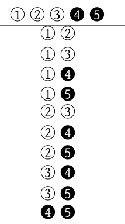 |
|---|
| Sampling 2 balls from 5 |
| 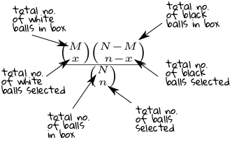 |
|---|
| Components of HypGeom$(N,M,n)$ PMF |
EXAMPLE 12: Find $P(Y=2)$ where $Y\sim$HypGeom$(5,3,4).$
SOLUTION: Here $N=5, M=3$ and $n=4.$ So $$ P(Y=2) = \frac{{M\choose 2}{N-M\choose n-2}}{{N\choose n}} =\frac{{3\choose2}{2\choose 2}}{{5\choose4}}. $$ Now, ${3\choose2}=3,$ ${2\choose 2}=1$ and ${5\choose4}=5.$ So $P(Y=2) = \frac35.$ ■ ::EXERCISE 11: (Easy) $X$ is known to follow HypGeom$(10,4,8).$ Find the following probabilities.
EXERCISE 12: (Medium) Suppose that $Y$ has HypGeom$(100,30,40)$ distribution and $Z$ has HypGeom$(100,70,40)$ distribution. Then which of the following two probabilities is larger and why? $$ P(Y=10),\quad P(Z=30) $$
EXAMPLE 13: In a class of 10 students there are 4 girls. If 3 students are selected at random from this class what is the chance that exactly 2 girls are selected?
SOLUTION:This is very much like the balls-in-a-box situation, where the 10 students are like 10 balls, the girls being the white balls, and the boys the black balls. Here $N=10,M=4,n=3.$ If $X$ is the number of girls selected then $$ X\sim HypGeom(10,4,3). $$ So $P($exactly 2 girls are selected$) = P(X=2),$ which is given by $$ P(X=2) = \frac{{4\choose 2} {10-4\choose 3-2}}{{10\choose 3}} = \frac{6\times 6}{120} = \frac3{10}. $$ ■ Expectation and variance: If $X$ is a HypGeom($N,M,n$) random variable then $$\begin{eqnarray*} E(X) &=& n\frac{M}{N},\\ Var(X) &=& \frac{(N-M)(N-n)Mn}{N^2(N-1)}. \end{eqnarray*}$$ $$\begin{eqnarray*} E(X) &=& \sum_{x=0}^n xP(X=x) =\sum_{x=0}^n x\frac{{M \choose x} {N-M \choose n-x}} {{N \choose n}}\\ &=& \frac1{{N \choose n}}\sum_{x=0}^n x {M \choose x} {N-M \choose n-x} \end{eqnarray*}$$ The `$x=0$' term is zero. We drop it to get $$\begin{eqnarray*} \frac1{{N \choose n}}\sum_{x=0}^n x {M \choose x} {N-M \choose n-x} &=& \frac1{{N \choose n}}\sum_{x=1}^n x {M \choose x} {N-M \choose n-x}\\ &=& \frac1{{N \choose n}}M \sum_{x=1}^n {M-1 \choose x-1} {N-M \choose n-x} \\ &=& \frac1{{N \choose n}} {N-1 \choose n-1} \\ &=& M\frac{n! (N-n)!}{N!}\times\frac{(N-1)!}{(n-1)!(N-n)!} \\ &=& \frac{M}{N}n \end{eqnarray*}$$ $$\begin{eqnarray*} E(X(X-1)) &=& \sum_{x=0}^n x(x-1)P(X=x) \\ &=& \sum_{x=0}^n x(x-1)\frac{{M \choose x}{N-M \choose n-x}}{{N \choose n}} \\ &=& \frac1{{N \choose n}}M(M-2) \sum_{x=2}^n {M-2 \choose x-2}{N-M \choose n-x} \\ &=& \frac1{{N \choose n}}M(M-2) {N-2 \choose n-2} \\ &=& \frac{M(M-1)}{N(N-1)}n(n-1) \end{eqnarray*}$$ $$\begin{eqnarray*} E(X^2) &=& E(X(X-1)) + E(X) \\ &=& \frac{M(M-1)}{N(N-1)}n(n-1) + \frac{M}{N}n \end{eqnarray*}$$ $$\begin{eqnarray*} Var(X) &=& E(X^2) - (E(X))^2 \\ &=& \frac{M(M-1)}{N(N-1)}n(n-1) + \frac{M}{N}n-\left(\frac{M}{N}n\right)^2 \\ &=& \frac{(N-M)(N-n)Mn}{N^2(N-1)}. \end{eqnarray*}$$ ::EXERCISE 13: (Easy) Compute $E(X)$ and $Var(X)$ where $X$ has HypGeom$(N,M,n)$ distribution with
Proof: $$\begin{eqnarray*} P(X_1=x_1|X_1+X_2=k) & = & \frac{P(X_1=x_1~\&~X_1+X_2=k)}{P(X_1+X_2=k)}\\ & = & \frac{P(X_1=x_1~\&~X_2=k-x_1)}{P(X_1+X_2=k)}\\ & = & \frac{P(X_1=x_1)P(X_2=k-x_1)}{P(X_1+X_2=k)}\\ & = & \frac{\binom{n_1}{x_1}p^{x_1}(1-p)^{n_1-x_1}\binom{n_2}{k-x_1}p^{k-x_1}(1-p)^{x_1}}{\binom{n_1+n_2}{k}p^k(1-p)^{n_1+n_2-k}}\\ & = & \frac{\binom{n_1}{x_1}\binom{n_2}{k-x_1}}{\binom{n_1+n_2}{k}}, \end{eqnarray*}$$ as required. [QED]
Proof: This should be intuitively obvious, because as the number of balls in the box becomes very large picking a ball hardly has any effect on its composition. So SRSWOR starts behaving like SRSWR.
More precisely, writing $R = N-M$ and $r = n-k,$ we have $$\begin{eqnarray*} \frac{\binom{M}{k} \binom{N-M}{n-k} }{ \binom{N}{n} } & = & \frac{ M(M-1)\cdots (M-k+1) }{N(N-1)\cdots (N-k+1) } \times \frac{R(R-1)\cdots(R-r+1) }{ (N-k)\cdots (N-n+1)} \times \frac{ n! }{ k! (n-k)! }. \end{eqnarray*}$$ Now $\frac M N\rightarrow p$ and so $\frac R N\rightarrow 1-p.$ So, since $n,k$ are fixed, we have $$ \frac{ M(M-1)\cdots (M-k+1) }{N(N-1)\cdots (N-k+1) } \rightarrow p^k $$ and similarly $$\frac{R(R-1)\cdots(R-r+1) }{ (N-k)\cdots (N-n+1)} \rightarrow (1-p)^{n-k}.$$ Hence the result. [QED]EXERCISE 14: (Easy)[dtwo1.png]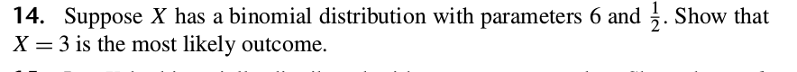
::EXERCISE 15: (Medium)[dtwo2.png]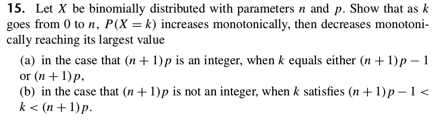
::EXERCISE 16: (Medium)[dtwo3.png]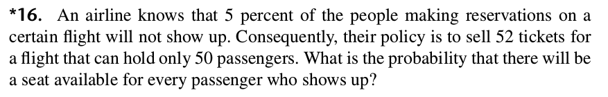
::EXERCISE 17: (Medium)[dtwo4.png]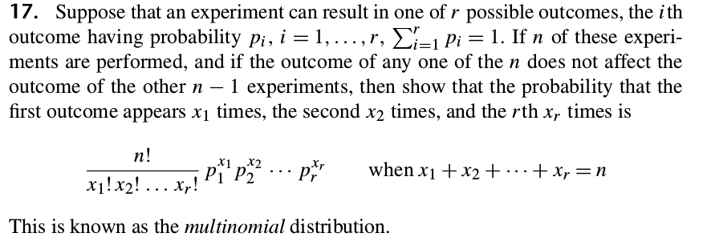
::EXERCISE 18: (Medium)[dtwo5.png]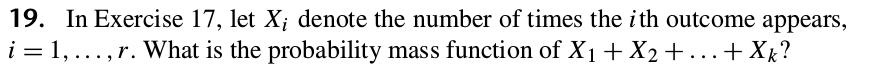
::EXERCISE 19: (Medium)[dtwo6.png]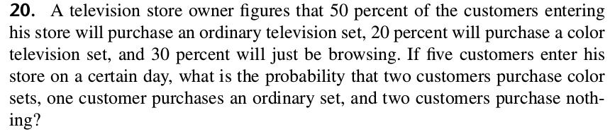
::EXERCISE 20: (Medium)[dtwo7.png]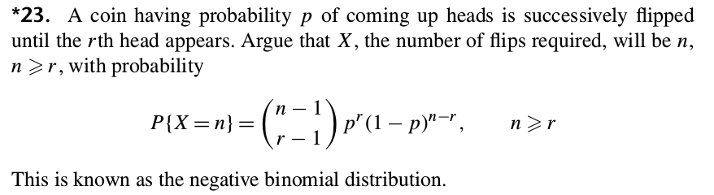
::EXERCISE 21: (Medium)[dtwo8.png]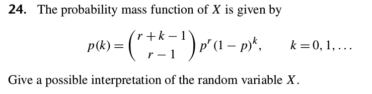
::EXERCISE 22: (Hard)[dtwo9.png]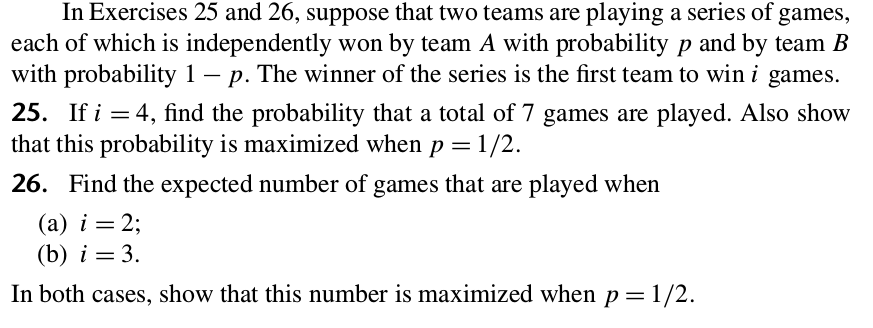
::EXERCISE 23: (Medium)[dtwo10.png]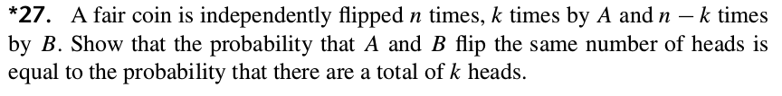
::EXERCISE 24: (Hard)[dtwo11.png]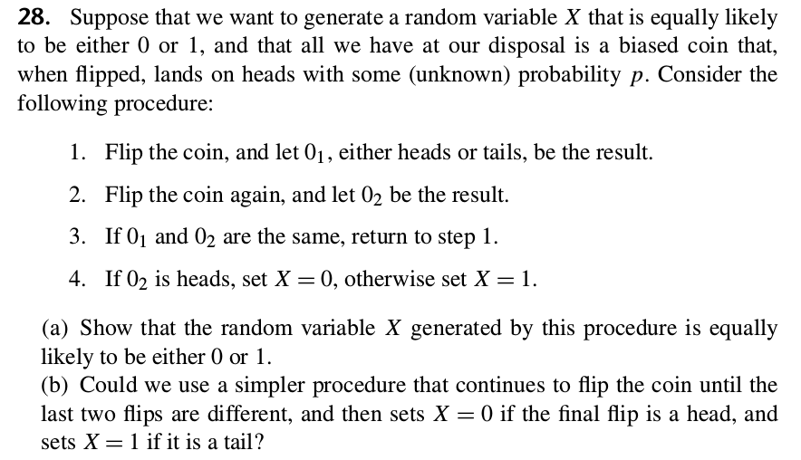
::EXERCISE 25: (Hard)[dtwo12.png]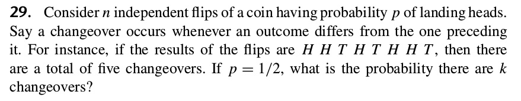
::EXERCISE 26: (Hard)[dtwo16.png]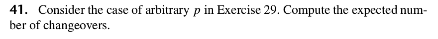
::EXERCISE 27: (Medium)[dtwo18.png]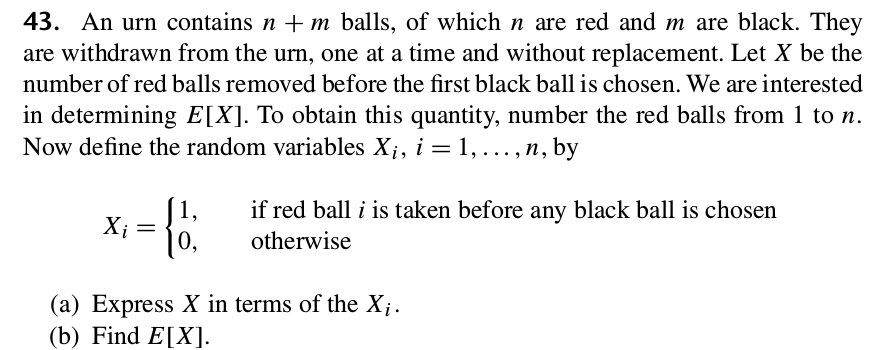
::EXERCISE 28: (Hard)[dtwo19.png]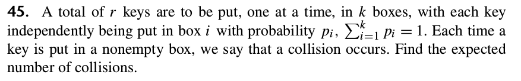
::EXERCISE 29: [dtwo20.png]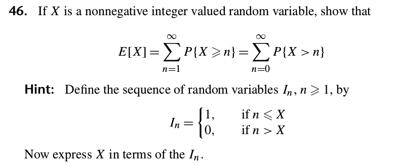
::EXERCISE 30: [dtwo21.png]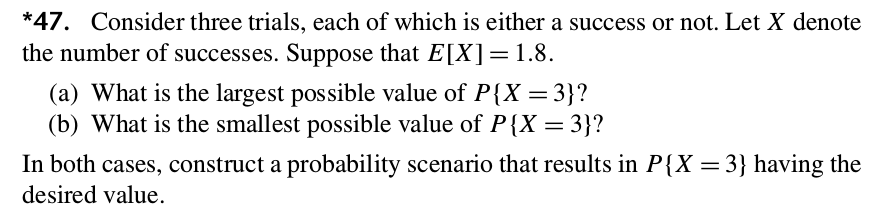
::EXERCISE 31: [dtwo22.png]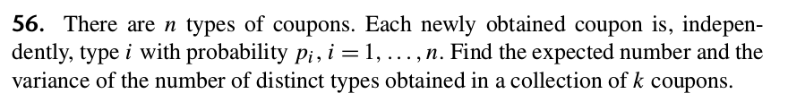
::EXERCISE 32: [dtwo23.png]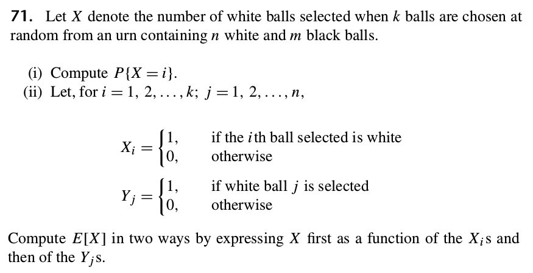
::EXERCISE 33: At a party $N$ men throw their hats into a corner, and each man picks up a hat randomly. Let $X$ be the number of men who get their own hats. Find $E(X)$ and $V(X).$
::EXERCISE 34: [dtwo25.png]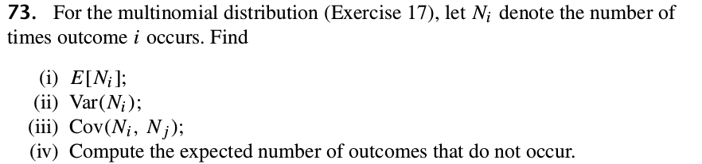
::EXERCISE 35: [dtwo26.png]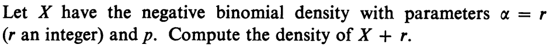
::EXERCISE 36: [dtwo27.png]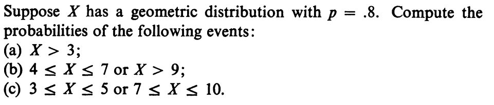
::EXERCISE 37: [dtwo28.png]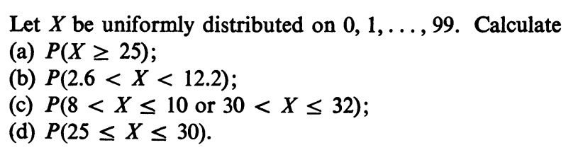
::EXERCISE 38: [dtwo29.png]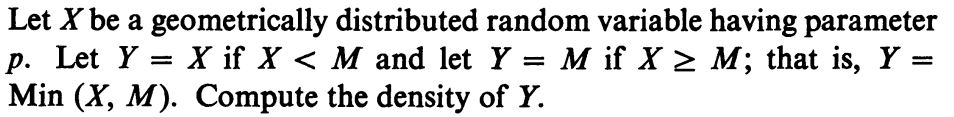
::EXERCISE 39: [dtwo30.png]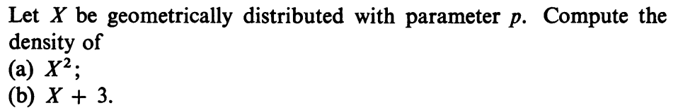
::EXERCISE 40: [dtwo31.png]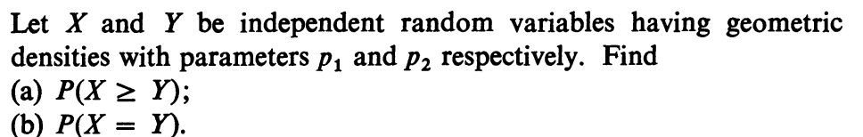
::EXERCISE 41: [dtwo32.png]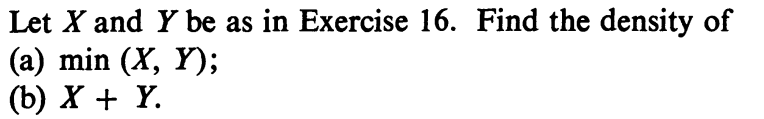
::EXERCISE 42: [dtwo33.png]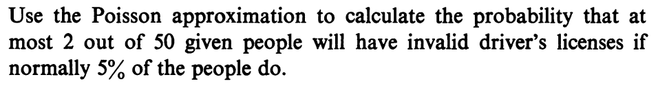
::EXERCISE 43: [dtwo34.png]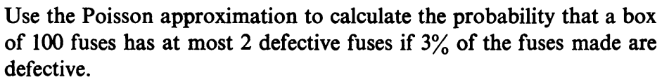
::EXERCISE 44: [dtwo35.png]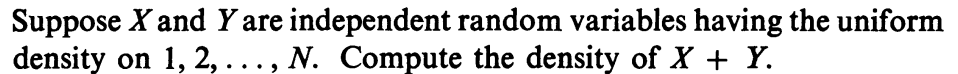
::EXERCISE 45: [dtwo36.png]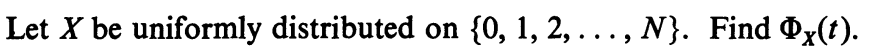